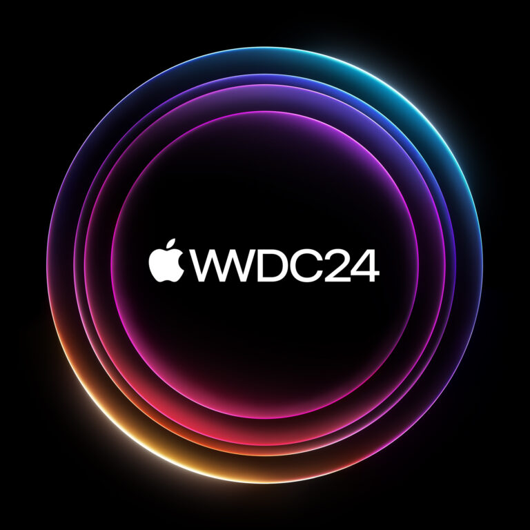
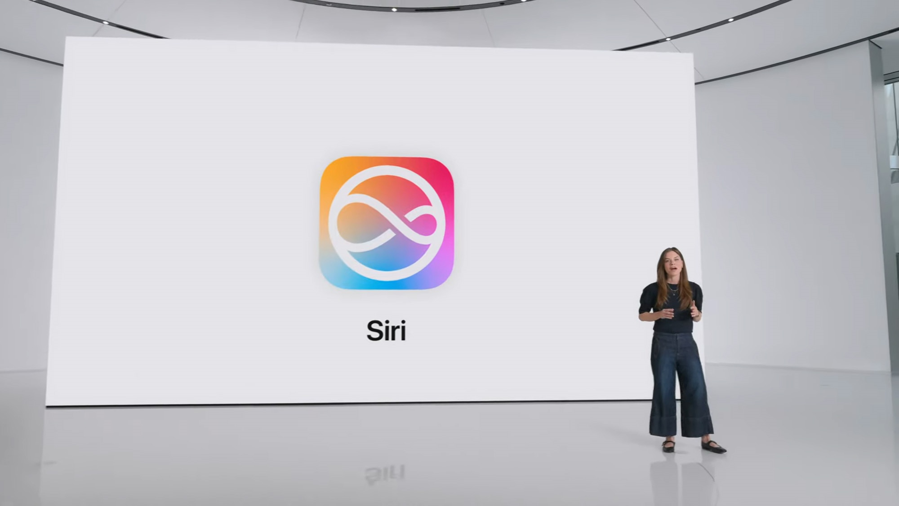

Featured In
Media coverage and press highlights.
Apple Newsroom — Apple Vision Pro upgraded with the M5 chip and Dual Knit Band

Apple Newsroom — Introducing Apple Intelligence for iPhone, iPad, and Mac

Apple Newsroom — Apple Intelligence is available today on iPhone, iPad, and Mac
CBS News — Apple Intelligence rollout, iOS 18.1
WWDC 2024 — June 10 | Apple
Apple WWDC: Apple shows off big new AI upgrades to Siri | CNBC Television
Apple Intelligence Ad | More personal Siri - Tech T
How to get the best fit wearing Apple Vision Pro | Apple Support